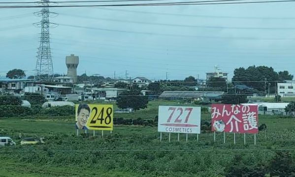

TOKAIDO SHINKANSEN WINDOW VIEW
727看板はいつ見える？座席側は？
田んぼの中に、727。

- 見える区間
- 新横浜 → 小田原（藤沢市付近）
- 座席側
- A席・E席
- タイミング
- 東京発のぞみ基準で約26分後
- 写真
- 4 枚
727看板の見つけ方
新横浜を出て少しすると、藤沢市葛原付近のE席側に、727 COSMETICSの白い看板が見えます。新幹線からは一瞬で通り過ぎるため「何の広告だろう」と気になりやすい、沿線広告の代表格です。この葛原付近の看板はE席側ですが、さらに進んだ用田付近やプチプチ看板の隣に見えるものはA席側。727は沿線に複数あり、席側も地点で変わります。隣の黄色い「248」は、最近は高速道路だけでなく新幹線の車窓でもよく見かける、きぬた歯科系の看板です。
東京から新大阪方面へ向かう場合は、新横浜 → 小田原（藤沢市付近）が近づいたらA席・E席の窓を少し早めに見てください。新大阪から東京方面へ向かう場合は、通過順が逆になります。
東海道新幹線の車窓としてのポイント
727看板は、富士山だけではない東海道新幹線の車窓を楽しむための見どころです。列車の速度が速いため、見える時間は短く、天気や座席位置によって見え方が変わります。
写真で見る727看板